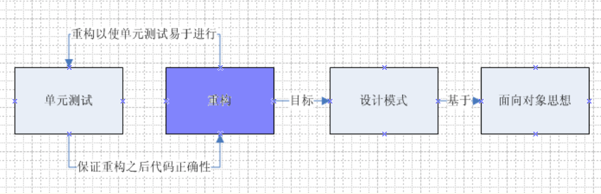

开发人员修养–敏捷
开始之前
本文的读者主要面向基层开发人员，即最苦逼的程序员，特别是像我一样的码农、码奴、码畜。
本文不会关注过多的细节，主要是一些自己的见解。
最后，鄙视一下文字屏蔽，MaoZedong、GongChanDang都不让我打，开国领袖、执政党的名字都不准民宣之于口，这是埋汰谁呢？这还是自由理想的社会主义吗？（我不会被请去喝茶把。。。）
序
自从大学毕业进入公司之后，就开始接触这个概念–敏捷。那时候没什么认识，就是领导带着我们每天早晨开开立会，每周开开周会，提交代码用JIRA写写流程之类的。至于这个概念到底有什么优点，甚至说这个概念是什么意思，脑子里没有什么具体的认识。我只知道它是不同于瀑布开发的另一种流程而已矣。
去年做了一年的项目研发，很坎坷。整个项目都是从零开始的，并且没有什么确定的需求。这也就必然的造成一件事–需求的快速、不规则甚至于是无道理的变更。特别是客户端开发本来就是整个系统中客户直接面对的方面，需求变更就更加频繁。而由于整个项目管理上的问题，造成了一些问题，这些就不去探讨了，但是客观上使得最后降临到我们基层开发人员肩上的任务变得异常复杂。当时我只记得每天被任务压的死死地，不停地写代码，改bug单，适应需求变更代码–写啊写啊，写了一整年。
现在把当时的代码拿过来看看，四个字的评语–惨不忍睹，各种“bad smell”充斥着整个软件。这些代码目前仍然在维护当中，但所耗费的人工是相当惊人的，而且我坚信那份代码会越来越烂，除非有高手对整个软件进行系统的重构–实际上那不如重新写一份。那么，这种结果是如何造成的呢？客观上的原因不可忽视，但是评论起来没有价值。因为人的主观能动性理论上是可以克服客观上的困难的。所谓“人定胜天”，所谓“怕死不是GongChanDang员”。从别人身上找原因的价值远远不如从自己身上找，而且对于自己的好处是无可替代的。
所以，我对于去年软件质量最终不令人满意的总结就是自己在软件开发过程中没有深刻的理解面向对象设计的优点，没有很好的贯彻敏捷思想的好处，没有端正的认识到软件开发到底是一种什么行为。那么，下面就逐步的对近来自己在软件方面的认识做出总结，以期大家共同受益。
端正思想–enjoy
在正式对敏捷开始介绍前，先对一些我遇到过的不正确的思想做出一些我的个人评论，以达到端正思想，更好的接受敏捷思想的作用。
- 思想无用论
作为绝大部分人员都是理工科毕业的学生所组成的行业，软件人员几乎是“实事求是”的偏执狂。甚至有很多人只相信自己亲自经历的经验教训。我想说的是，好的思想实践是完全可以归为己用的。“他山之石，可以攻玉”，前人总结出的优秀思想，存在必有其合理性。节省他人的时间，也节省自己的时间，接受前人的指导，“站在巨人的肩膀上才能看的更远”。
- 需求总是变，时间不够用等等对客观条件的埋怨
除非抱怨的对象是领导，并且领导能够改变这一困境，否则这几乎没有什么意义。埋怨可以让我们发泄，但是最终的任务却不会有任何改变。在困境当中不断进步，学习更先进的方法以适应甚至改变困境才是我辈应该做的。说句不恰当的话，“Life is like being raped, rebel, or enjoy!”。只要把其中的Life换成Software development就是我们程序员的真实写照。不管任务多重，需求多么不合理，既然选择了程序员作为自己的职业，那么二选一，简单的选择题。
- 敏捷是给大牛们用的
敏捷如果只是给高手们用的，那么它也就没有这么大的价值了。任何开发人员都能从中获得益处，或大或小。
- 敏捷就是无视设计、文档，最快的做出代码
敏捷与瀑布实际上并没有抵触的关系，它实际上是一种继承并且发展的关系。就像王阳明的心学也借鉴了佛家、道家思想，MaoZedong思想当中借鉴了各种优秀的中华民族传统思想文化以及西方的马列主义一样，这是一种借鉴并且适应生存环境的发展。敏捷中的每轮迭代都类似一个小瀑布，只是敏捷思想的轻量、灵活、适应变化更加适合当今软件开发的业务潮流。
- 没有外在环境，领导不用，我也不用
敏捷不只是实践，还有其优秀的思想融入其中。在软件开发过程中，即使没有使用敏捷开发流程，没关系，只要自己能够将其中优秀的思想借鉴过来并且应用到自己的开发过程中，相信你很快就会感受到其中的好处。
什么是敏捷–拥抱变化
*敏捷开发（Agile Development）*是一种面临迅速变化的需求快速开发软件的能力。–《敏捷软件开发 原则、模式与实践》
一群牛逼的西方先行者们为应对当前软件需求迅速变更而做出了一个宣言，被称为敏捷软件开发宣言：
我们正在通过亲身实践以及帮助他人实践，揭示更好的软件开发方法。通过这项工作，我们认为：
*体和交互*胜过过程和工具
*可工作的软件*胜过面面俱到的文档
*客户协助*胜过合同谈判
*响应变化*胜过遵循计划
虽然右项也具有价值，但我们认为左项具有更大的价值。
核心：团队合作、可工作的软件、快速响应变化
敏捷对很多方面都有好处：
- 对客户 客户在软件开发流程中一直在参与当中，并且由于迭代的不停反馈，会使得最终的软件产品更符合客户的需求。
- 对老板 敏捷可以提高人员的利用率，虽然参与人员更累（%>_<%），但是很显然会为老板省更多钱。
- 对项目经理 工作的环境更加舒心，项目的管理更加得心应手。
上面的和我们底层码畜无关。对于我们基层的开发技术人员来说，这其中我认为最有价值的概念就是响应变化–即，使用敏捷开发的方式，可以使自己编写出的代码能够更好的应对需求的改变。听起来很美好，不是吗？
即使没有提供任何可应用的手段，单单从思想本身，我们获得的好处就是，对软件的变化要抱一种积极的态度。需求的变化是一种必然，是不可避免的。想要在变化当中活下来，要么累死累活的不停改代码，要么学习前辈们已经做出的实践，使自己变得更加强壮。所谓“拥抱变化”就是这个意思，要积极的面对变化，而不是埋怨和逃避。那么，如何做呢？
手段–重构
任何优秀的思想都不是空想的，都是要和实践结合在一起才能开花结果的。就像GongChanDang在新民主主义革命中一样，党具有先进的MaoZedong思想，但是只是想是没有用的。于是产生了三大法宝–统一战线、武装斗争、党的建设。这其实都是我们民族很优秀的一些思想，但是现在很多人对其避而不谈、歪曲甚至抨击。扯远了，回到正题–敏捷思想包含了很多积极的东西，它也具有很多手段来达到适应变化这一目的。这些实践包括：站立会议、持续集成、单一主干、重构、TDD、结对编程、迭代等等。这其中，我认为对于基层技术人员最有用处的概念有这么几个：
- 重构（Refactor）
- 设计模式(Design Patterns)
- 单元测试(Test-Driven Development,TDD)
三个概念的关系如下所示：

也就是说，要想提高自己的代码应对变化的能力，首先要提高自己对于面向对象思想的理解，其实最主要的也就是那些面向对象设计原则。这些原则是设计模式的目的，重构的目标之一就是使软件符合设计模式，而单元测试可以使重构是安全和可持续的，同时软件也需要进行重构以利于单元测试。
实际上，虽然说是三项内容，其核心就是重构。单元测试保障重构的安全性和持续性，设计模式为重构提供目标。而重构的目的就是通过程序员不停地自我修正将代码维持的健康且易于面对变化。重构对于程序员来说就是用来面对变化的手段。
我是做iOS客户端开发的，推荐几本书，大师们在书中讲述的知识对于有一定开发经验且曾经被混乱代码折磨过的程序员会有很大帮助：
- 经典–《设计模式 可复用面向对象软件的基础》
- 经典–《敏捷软件开发 原则、模式与实践》
- 经典–《重构-改善即有代码的设计》
- 《Cocoa设计模式》，iOS客户端程序员必读
- 《测试驱动的iOS开发》，客户端比较不容易进行TDD，因为只是几个断言语句很难对客户端各种变化进行涵盖，因而需要在软件设计时就把软件设计为易于测试的形式。
我认为对于开发技术人员来说这三个概念是敏捷适应变化的三大法宝。至于其他的那些东西实际上是和底层程序员的基本功弱相关的，更多是由项目管理人员关心的。甚至在项目没有使用敏捷流程的情况下也可以使用这三种实践来提高软件质量和效率。那么，如何把这三个手段切实的融入到我们的开发当中呢？
实践概述
假如没有变化，不用维护，实际上无所谓啥耦不耦合，内不内聚。代码编写完成，测试通过，交付用户–多美好。既然无法实现，那么只能面对现实。首先，面对需求的时候，（对于我们程序员来说，一般来说都已经划分成了story，最起码已经整理成了模块的文字需求），我们要以尽可能简洁的方式实现需求–可工作的软件是我们最终的目的。当然了，如果某些部分你认为使用某种设计模式会更好的话，也可以使用。如果需要使用TDD，则需要进行重构–实际上重构是贯穿于整个软件开流程当中的，看着不顺眼就改之。将代码重构的利于进行单元测试，并且使代码成功运行，这需要很好的基本功。实际上这种不停重构的方式是敏捷思想中拥抱变化的最好体现–即不停地将代码变得整洁、优秀，不要害怕修改，不要懒惰，使代码一直维持较好的健康程度。
然后就可以交付了，等待客户的反馈，或者其他人的意见（比如测试）。当由于需求变更需要进行修改、重构的时候，要想一想是否需要进行抽象。对于设计模式，一种很好的方式就是不要主动出击，而要有的放矢。也就是说，尽量不要主动的运用什么自以为聪明的模式，只有当确实需要的时候才去做。如果确定某个功能模块、代码模块等等会经常变化或者可能发生经常变化，并且这么做的代价小于获得的好处，那么就对此模块进行抽象。如何抽象？设计模式给我们提供了很好的指导。而如果前面使用了TDD，此处的重构就会比较有安全保障，否则就不得不面临重构风险。特别是代码越来越多，软件越来越复杂的时候，这种风险就越来越大。
TDD的选择轮不到我们基层程序员来决定，而重构和设计模式的使用时机是我们每个程序员所必须负担的责任。关于重构的一些信息参看我的这篇笔记：http://www.cnblogs.com/slegetank/articles/2814100.html, 其实就是我对《重构-改善即有代码的设计》的读书笔记。具体重构方法还是看原书。
设计模式的内容网上也一堆一堆的，不需要我在此赘述。但是我希望和我一样的基层程序员们还是可以研究一下这些前人总结的经验，对自己的编程水平提高很有好处。不用整天把这玩意挂在嘴边，但是别人挂在嘴边的时候我们也不能不懂不是？
对于客户端程序员来说，TDD是三个手段中最难掌握的一个。如果时间允许的话，我会在自己理解的基础上后续写出自己的见解。
总结
简单来说，基层程序员应对变化需要做到如下几点：
1、心态上，积极拥抱变化。
2、知识上，更深刻的理解面向对象思想，了解设计模式，了解重构，学会TDD（比较难）。
3、实践上，通过重构使软件不停地适应需求变化。
以上就是我对敏捷的一点小小感悟。对有些比我还愚笨的人来说，这有些难。但是记住，双手除了能撸之外，还掌握着自己的命运线，不是吗？
最后，祝各位读者清明节玩的happy~~
后记
近来又重读毛选，读到了《中国革命战争的战略问题》。这篇文章是1936年写的，此时距长征完成大概一年时间。这篇文章是对第二次国内革命战争（即十年内战、土地革命战争，主要形式是围剿与反围剿，经过长征，最终结束于西安事变，国共第二次合作）的一次总结。其中第七节《运动战》中讲了一些内容，让我想写到这里：
“由于敌人的强大和红军技术贫弱所发生的红军作战的显著特点之一，就是没有固定的作战线。……计划改变的频繁，使我们家常便饭的事情。……承认这种特点，对于我们是有益的。从这个特点出发，规定我们的日程，不要幻想有进无退的战争，不要震惊于领土和军事后方的暂时的流动，不要企图建立长期的具体计划。把我们的思想、工作适应于情况，准备坐下，又准备走路，不要把干粮袋丢了。只有在现在的流动生活中努力，才能争取将来的比较不流动，才能争取最后的稳定。……反对流动的同志们要装作一个大国家的统治者来办事，结果是得到了一个异乎寻常的大流动–二万五千里的长征。”
处于弱势地位时，就要承受弱者必须承受的负担，打仗是这样，做事也是这样。所以，同志们，努力吧！